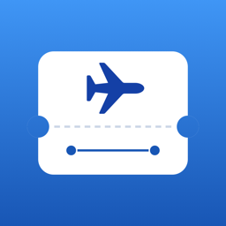

My Flight
サポート
予約のスクショ・メール・搭乗券から、自分と家族の便・新幹線・ホテル・レンタカーをまとめるアプリ
お問い合わせ
不具合のご報告やご要望は、次のメールアドレスまでお送りください。
読み取れなかった予約は、名前や予約番号などを隠したスクショや文を添えていただけると、調査がスムーズです。
便の入れ方
- スクショ：航空会社のアプリやサイトの予約の詳細を撮って、共有シートから「My Flight」に送るか、右上の＋の「スクショから読み取る」で選びます。
- Wallet の搭乗券：Wallet で搭乗券を開き、共有から「My Flight」に送ります。
- 予約のメール：メールの本文を選んで共有するか、コピーして＋の「コピーした文から読み取る」に貼り付けます。
- e チケット控えの PDF：ファイルアプリなどで PDF を開いて共有するか、＋の「PDF から読み取る」で選びます。
- 手で入れる：＋の「手で入れる」から、便名と日付などを入れます。
読み取った結果は、追加する前に確かめて直せます。文字の読み取りは端末の中で行います。
新幹線・ホテル・レンタカー
- 新幹線・特急：EX 予約（スマートEX）とえきねっとの予約のメールを、飛行機と同じように共有か貼り付けで渡すと、便と同じ一覧に入ります。予約の変更のメールで列車が新しくなり、払い戻しのメールで「取り消した便」に移ります。メールに乗る人の名前がないので、乗る人と人ごとの座席は便の画面の「編集」で選びます。
- ホテル・レンタカー：下のタブの「ホテル」「レンタカー」で、右上の＋から予約のメールを貼り付けます。トヨタレンタカーと、tripla・Booking.com・じゃらん・楽天トラベル・一休などのホテルの予約のメールに対応しています。取り消しのメールで「取り消した予約」に移ります。
- ホテル・レンタカーの画面の「予約の確認・変更・キャンセル」は、メールに書かれていた予約のページを開きます。メールのアプリでコピーした文を貼り付けると、リンクの URL も一緒に読み取ります。キャンセルポリシーは表にして出します。
- 予約のページの URL とキャンセルポリシーはこの iPhone の中だけに置き、家族との共有では送りません。
予約のメールを自動で取り込む
iPhone の「ショートカット」アプリのオートメーションを使うと、航空会社から予約のメールが届いたときに自動で便を追加できます。
- My Flight の左上の「…」→「メールの取り込み」で、自分の名前（ローマ字・カナ・漢字）と家族の名前を入れます。
- 「ショートカット」アプリの「オートメーション」で、「メール」を選び、「送信者」に航空会社などの予約のメールのアドレスを入れます（新幹線・ホテル・レンタカーの予約のメールも同じように取り込めます）。
- アクションに「メールから便を取り込む」（My Flight）を足し、本文に変数「メール」の「コンテンツ」を渡します。
自分か登録した家族の名前があるメールだけ便を追加します。取り消しのメールなら、その便を「取り消した便」に移します。
よくある質問
到着の時刻などが空のままです。
読み取った文に書かれていない項目は空になります。便を開いて「…」の「編集」から入れられます。FlightAware の AeroAPI のキーをお持ちの方は、「…」→「運航情報」にキーを入れると、空いた項目を便名と日付で調べて埋めます（任意）。
家族の便を見られるようにしたい。
「…」→「家族と共有」から、iCloud の共有で家族を招待します。招待された人は見るだけで、直したり消したりはできません。
航空会社のサイトで予約を開くボタンは何をしますか。
便の画面から、航空会社のサイトの予約の確認のページをアプリの中で開きます。「自分と家族の情報」に予約の名前を入れておくと、名前と予約番号を入れた状態で開きます。サイトでの操作は、航空会社のサイトの利用条件に従います。
パスポートの番号はどこに保存されますか。
この iPhone のキーチェーンにだけ保存し、iCloud には送りません。見るときは Face ID などで確かめます。
ウィジェットはありますか。
ホーム画面（小・中）とロック画面に、次の便を出すウィジェットがあります。ホーム画面やロック画面を長押しして「編集」から追加してください。自分が乗る便を優先して出し、押すとその便の画面を開きます。
支払い期限が出ています。
購入前の予約のメール（ANA のお預かり期限、JAL の購入期限）を取り込むと、一覧と便の画面に支払い期限を出し、期限の 1 日前と 3 時間前にお知らせします。購入完了のメールを取り込むか、航空券番号が入ると消えます。便の画面の「買った（期限を消す）」でも消せます。買わずに期限が過ぎると、航空会社が予約を取り消すので「取り消した便」に移します（ANA は期限切れの取り消しのメールを送らないため）。
予約を変更しました。
予約の変更のメール（JAL の「変更前の予約」「変更後の予約」）を取り込むと、変更前の便から変更した人を外し、変更後の便を新しい予約番号で入れます。
家族ごとに色を変えたい。
「…」→「自分と家族の情報」で人を開き、「色」から選びます。一覧の乗る人の札がその色になります。色は、名前などと一緒に自分の iCloud にも控えます。
取り消した便や乗った便は残りますか。
乗った便は「これまで」にずっと残ります。取り消した便は、取り消してから 1 週間で消えます。
アプリを入れ直したら便が消えました。
自分と家族の名前・人ごとの情報は、自分の iCloud の控えから自動で戻ります。便・ホテル・レンタカーは、「家族と共有」で iCloud に送ってあれば、「家族と共有」の「iCloud から自分の便を戻す」で戻せます（搭乗券・支払い期限・予約のページの URL・キャンセルポリシーは戻りません）。
iPhone Duo や大きな画面で使えますか。
はい。開いた状態の iPhone Duo など広い画面では、左に一覧、右に便の画面を並べて出します。横向きにもできます。
航空会社のアプリですか。
いいえ。My Flight は個人が開発したアプリで、航空会社・鉄道会社・ホテル・レンタカー会社とは関係ありません。